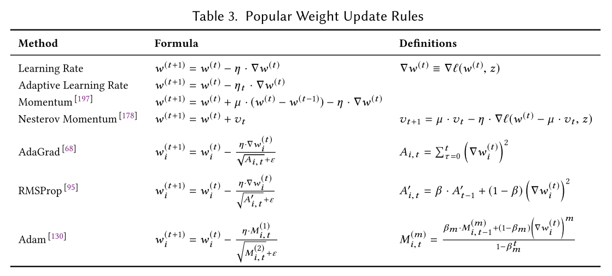

深度学习入门
深度学习入门
开始时间：2019年09月17日
感知机
感知机（perceptron）接收多个输入信号，输出一个信号。学习是确定合适的参数的过程，而人要做的是思考感知机的构造（模型），并把训练数据交给计算机。
\(y=\left\{\begin{array}{ll}{0} & {\left(b+w_{1} x_{1}+w_{2} x_{2} \leqslant 0\right)} \\ {1} & {\left(b+w_{1} x_{1}+w_{2} x_{2}>0\right)}\end{array}\right.\) ，此处，\(b\) 称为偏置，\(w_1\) 和 \(w_2\) 称为权重。\(w_1\) 和 \(w_2\) 是控制输入信号的重要性的参数，而偏置是调整神经元被激活的容易程度（输出信号为1的程度）的参数。
感知机的局限性就在于它只能表示由一条直线分割的空间。由曲线分割而成的空间称为非线性空间，由直线分割而成的空间称为线性空间。e.g. 单层感知机无法表示异或门，但可以叠加层后表示，见下图，而与门，或门个与非门皆可以使用单层感知机实现。
神经网络及其学习方式
一般由输入层、中间层（隐藏层）、输出层构成，与感知机的主要区别在激活函数。
激活函数
就是在人工神经网络上运行的函数，负责将神经元的输入映射到输出端。激活函数不可以使用线性函数，线性函数的问题在于，不管如何加深层数，总是存在与之等效的“无隐藏层的神经网络”。
实际上，用作激活函数的函数最好具有关于原点对称的性质。
- 阶跃函数：以阈值为界，一旦输入超过阈值，就切换输出。
- Sigmoid函数：\(h(x) = \frac{1}{1+exp(-x)}\) 。
- ReLU函数：\(h(x)=\left\{\begin{array}{ll}{x} & {(x>0)} \\ {0} & {(x \leqslant 0)}\end{array}\right.\) ，全称线性整流函数（Rectified Linear Unit）。
符号解释：\(w_{12}^{(1)}\) \(a_1^{(2)}\) 如下图
输出层函数
输出层的激活函数，用 \(\sigma()\) 表示，一般地，回归问题可以使用恒等函数，二元分类问题可以使用sigmoid函数，多元分类问题可以使用Softmax函数（作用于输出层，例子见下图）。
恒等函数：会将输入原样输出
Softmax函数： \(y_k = \frac{exp(a_k)}{\sum_{i=1}^{n} exp(a_i)}\) ，表示假设输出层共有n个神经元，计算第k个神经元的输出 \(y_k\) 。
使用python实现softmax时需要注意处理指数溢出，改进方法是在分子分母的指数上同时加/减一个常数C，C通常为输入信号最大值。
softmax函数的输出范围\((0.0, 1.0)\)，输出总和为1，所以可解释为概率。
一般而言，神经网络只把输出值最大的神经元所对应的类别作为识别结果。并且，即便使用softmax函数，输出值最大的神经元的位置也不会变。因此，神经网络在进行分类时，输出层的softmax函数可以省略。在实际的问题中，由于指数函数的运算需要一定的计算机运算量，因此输出层的softmax函数一般会被省略。

注：输入图像通过Affi ne层和ReLU层进行转换，10个输入通过Softmax层进行正规化在这个例子中，“0”的得分是5.3，这个值经过Softmax层转换为0.008（0.8%）；“2”的得分是10.1，被转换为0.991（99.1%）
输出层神经元数量：对于分类问题，输出层的神经元数量一般设定为类别的数量。
前向传播（forward propagation）与反向传播（back propagation）
预处理（pre-processing）与数据的正规化（normalization/Feature scaling ）
（应该有区别，例如将数据范围转化到[0,1]之间）、数据白化（whitening，将数据整体的分布形状均匀化的方法）、数据批处理（batch）
损失函数
神经网络的“学习”过程就是从训练数据中自动获得最优权重参数的过程。设立训练数据和测试数据是为了评估模型的泛化能力。
训练过程的评价指标为损失函数，损失函数可以使用任意函数，一般采用:
① 均方误差（MSE，mean-square error） \(E = \frac{1}{2}\sum_{k}{(y_k - t_k)^2}\) ；
② 交叉熵误差（cross entropy error） \(E = - \sum_{k}{t_k\log{(y_k[+delta])}}\)
（其中k表示数据维度，\(y_k\) 是神经网络输出，\(t_k\) 是标签值，log是以e为底的对数，delta是防止对数出现无穷大。）[P85]
均方损失： 假设误差是正态分布，适用于线性的输出(如回归问题)，特点是对于与真实结果差别越大，则惩罚力度越大，这并不适用于分类问题
交叉熵损失： 假设误差是二值分布，可以视为预测概率分布和真实概率分布的相似程度。在分类问题中有良好的应用。
一般我们用预测值和实际值的平方差或者它们平方差的一半，但是通常在逻辑回归中我们不这么做，因为当我们在学习逻辑回归参数的时候，会发现我们的优化目标不是凸优化，只能找到多个局部最优值，梯度下降法很可能找不到全局最优值，虽然平方差是一个不错的损失函数，但是我们在逻辑回归模型中会定义另外一个损失函数。
我们常看到两个交叉熵损失函数对应不同的最后一层的输出。第一个对应的最后一层是 sigmoid，用于二分类问题，第二个对应的最后一层是 softmax，用于多分类问题。但是它们的本质是一样的。
\(\begin{array}{c}{\operatorname{cost}\left(h_{\theta}(x), y\right)=-y_{i} \log \left(h_{\theta}(x)\right)-\left(1-y_{i}\right) \log \left(1-h_{\theta}(x)\right)} \\ {C=-\sum_{i}\left(y_{i} \log a_{i}\right)}\end{array}\)
sigmoid 作为最后一层输出的话，那就不能吧最后一层的输出看作成一个分布了，因为加起来不为 1。现在应该将最后一层的每个神经元看作一个分布。
二分类、多分类与多标签的基本概念
二分类：表示分类任务中有两个类别，比如我们想识别一幅图片是不是猫。也就是说，训练一个分类器，输入一幅图片，用特征向量x表示，输出是不是猫，用y=0或1表示。二类分类是假设每个样本都被设置了一个且仅有一个标签 0 或者 1。
多类分类(Multiclass classification): 表示分类任务中有多个类别, 比如对一堆水果图片分类, 它们可能是橘子、苹果、梨等. 多类分类是假设每个样本都被设置了一个且仅有一个标签: 一个水果可以是苹果或者梨, 但是同时不可能是两者。
多标签分类(Multilabel classification): 给每个样本一系列的目标标签. 可以想象成一个数据点的各属性不是相互排斥的(一个水果既是苹果又是梨就是相互排斥的), 比如一个文档相关的话题. 一个文本可能被同时认为是宗教、政治、金融或者教育相关话题。
参考交叉熵的相关推导1
多类分类（单标签）时，每张图片的损失是一个交叉熵，交叉熵针对的是所有类别（所有类别概率和是1，使用softmax）。 多标签分类时，每张图片的损失是N个交叉熵之和（N等于类别数），交叉熵针对的是单个类别（单个类别概率和是1）。
链接：https://blog.csdn.net/u011734144/article/details/80915559
端到端
深度学习有时也称为端到端机器学习（end-to-end machine learning）。这里所说的端到端是指从一端到另一端的意思，也就是从原始数据（输入）中获得目标结果（输出）的意思。
mini_batch
通过抽取一部分的训练数据来学习和计算误差函数，减小计算量。编程矩阵运算，程序实现参考。[P91]
在进行神经网络的学习时，不能将识别精度作为指标。因为如果以识别精度为指标，则参数的导数在绝大多数地方都会变为0。[P93]
梯度下降法
设有函数 \(f(x_0,x_1)\) ,像 \(\left(\frac{\partial f}{\partial x_{0}}, \frac{\partial f}{\partial x_{1}}\right)\) 这样的由全部变量的偏导数汇总而成的向量称为梯度 \(\operatorname{grad} f\left(x_{0}, x_{1}, \ldots, x_{n}\right)=\left(\frac{\partial f}{\partial x_{0}}, \ldots, \frac{\partial f}{\partial x_{j}}, \ldots, \frac{\partial f}{\partial x_{n}}\right)\) ，梯度法公式： \(x_{i}=x_{i}-\eta \frac{\partial f}{\partial x_{i}}\) 其中 \(\eta\) 称为学习率。
公式含义是在每个变量轴上减小对应变量值。梯度不一定是指向了最低处,实际上，梯度指示的方向是各点处的函数值减小最多的方向。既然在变量空间的某一点处，函数沿梯度方向具有最大的变化率，那么在优化目标函数的时候，自然是沿着负梯度方向去减小函数值，以此达到我们的优化目标。
- 求梯度的两种方法：① 基于数值微分的方法（中心差分和前向差分，速度慢，一般不容易出错，用于比对验证结果正确性）② 解析性地求解数学式的方法（反向传播，速度快）。
- 导数、偏导数、梯度的定义 链接
学习高原
函数的极小值、最小值以及被称为鞍点（saddle point）的地方，梯度为0。极小值是局部最小值，也就是限定在某个范围内的最小值。鞍点是从某个方向上看是极大值，从另一个方向上看则是极小值的点。虽然梯度法是要寻找梯度为0的地方，但是那个地方不一定就是最小值（也有可能是极小值或者鞍点）。此外，当函数很复杂且呈扁平状时，学习可能会进入一个（几乎）平坦的地区，陷入被称为“学习高原”的无法前进的停滞期。
学习率、超参数
学习率这样的参数称为超参数。这是一种和神经网络的参数（权重和偏置）性质不同的参数。相对于神经网络的权重参数是通过训练数据和学习算法自动获得的，学习率这样的超参数则是人工设定的。一般来说，超参数需要尝试多个值，以便找到一种可以使学习顺利进行的设定。常见超参数包括： 树的数量或树的深度、矩阵分解中潜在因素的数量、学习率（多种模式）、深层神经网络隐藏层数、k均值聚类中的簇数。
随机梯度下降法（stochastic gradient descent）
对随机选择的数据进行的梯度下降法，结合mini_batch计算损失函数并利用梯度下降法求解参数。
epoch
epoch是一个单位。一个epoch表示学习中所有训练数据均被使用过一次时的更新次数。比如，对于10000笔训练数据，用大小为100笔数据的mini-batch进行学习时，重复随机梯度下降法100次，所有的训练数据就都被“看过”了A 。此时，100次就是一个epoch。
一般做法是事先将所有训练数据随机打乱，然后按指定的批次大小，按序生成mini-batch。这样每个mini-batch均有一个索引号，比如可以是0, 1, 2, . . . , 99，然后用索引号可以遍历所有的mini-batch。遍历一次所有数据，就称为一个epoch。
过拟合（overfitting）与欠拟合（underfitting）
欠拟合问题，根本的原因是特征维度过少，导致拟合的函数无法满足训练集，误差较大。
解决方法
增加新特征，可以考虑加入进特征组合、高次特征，来增大假设空间; 尝试非线性模型，比如核SVM 、决策树、DNN等模型; 如果有正则项可以较小正则项参数 $\lambda$; Boosting ,Boosting 往往会有较小的 Bias，比如 Gradient Boosting 等.过拟合问题，根本的原因则是特征维度过多，导致拟合的函数完美的经过训练集，但是对新数据的预测结果则较差。
解决方法
交叉检验，通过交叉检验得到较优的模型参数; 特征选择，减少特征数或使用较少的特征组合，对于按区间离散化的特征，增大划分的区间; 正则化，常用的有 L1、L2 正则。而且 L1正则还可以自动进行特征选择; 如果有正则项则可以考虑增大正则项参数 lambda; 增加训练数据可以有限的避免过拟合; Bagging ,将多个弱学习器Bagging 一下效果会好很多，比如随机森林等.
误差反向传播法
一个能够高效计算权重参数的梯度的方法。BP算法是“误差反向传播”的简称，是一种与最优化方法（如梯度下降法）结合使用的，用来训练人工神经网络的常见方法。该方法对网络中所有权重计算损失函数的梯度。反向传播计算导数的原理是链式法则。
简单加法层和乘法层
反向传播时，加法节点直接传递上层导数，乘法节点需要交换输入作为系数与导数相乘。（三个呢？）
激活函数层
ReLU层
对激活函数 \(h(x)=\left\{\begin{array}{ll}{x} & {(x>0)} \\ {0} & {(x \leqslant 0)}\end{array}\right.\) \({求偏导} \Longrightarrow\) \(\frac{\partial y}{\partial x}=\left\{\begin{array}{ll}{1} & {(x>0)} \\ {0} & {(x \leqslant 0)}\end{array}\right.\) ，易知，如果正向传播时的输入x大于0，则反向传播会将上游的值原封不动地传给下游。如果正向传播时的x小于等于0，则反向传播中传给下游的信号将停在此处。（类比开关）
Sigmoid层
激活函数 \(h(x) = \frac{1}{1+exp(-x)}\) 的反向传播如下图
相比ReLU，不仅包含加法和乘法层，还需要计算指数exp()和除法“/”，最后反向传播得到的偏导数可以整理如下：\(\begin{aligned} \frac{\partial L}{\partial y} y^{2} \exp (-x) &=\frac{\partial L}{\partial y} \frac{1}{(1+\exp (-x))^{2}} \exp (-x) \\ &=\frac{\partial L}{\partial y} \frac{1}{1+\exp (-x)} \frac{\exp (-x)}{1+\exp (-x)} \\ &=\frac{\partial L}{\partial y} y(1-y) \end{aligned}\) .
易知，正向传播的结果y可以保存，而后用于计算反向传播时的偏导数。
Affine/Softmax层
Affine层
$ $ 分别是形状为(2,)、(2, 3)、(3,)的多维数组，所以，神经元的加权和可以用 \(Y = np.dot(X, W) + B\) 计算出来。神经网络的正向传播中进行的矩阵的乘积运算在几何学领域被称为“仿射变换”。因此，将进行仿射变换的处理实现为“Affine层”。其反向传播（使用批处理，N个一组）的计算图如下：
需要注意的是，正向传播时，偏置会被加到每一个数据上。因此，反向传播时，各个数据的反向传播的值需要汇总为偏置的元素，即偏置 \(\boldsymbol{B}\) 需要在列方向（axis = 0）上求和。
Softmax-with-Loss 层
Softmax-with-Loss = Softmax Layer + Multinomial Logistic Loss Layer（交叉熵代价函数） +
上图是该层的计算图，易知：（这张图有疑问）
- Softmax层将输入 \((a_1,a_2,a_3)\) 正规化，输出 \((y_1,y_2,y_3)\) .
- Cross Entropy Error层接收Softmax的输出 \((y_1,y_2,y_3)\) 和标签\((t_1,t_2,t_3)\) ，从这些数据中输出损失L.
推导过程：链接
神经网络训练技巧
参数更新最优化方法
总结：

最优化 是神经网络学习找到使损失函数的值尽可能小的参数的过程。
原文链接：<链接>
参考论文：<链接>
参考博客：<链接>
梯度下降法
\(W \leftarrow W - \eta \frac{\partial{L}}{\partial{W}}\) 这是SGD的数学表达，权重W可以用梯度下降的方式求得。SGD简单一如实现，但它的缺点是，如果函数的形状非均向（anisotropic），比如呈延伸状（导致导致梯度并不指向最小值的方向），搜索的路径就会非常低效。
Batch Gradient Descent 在每一轮的训练过程中，Batch Gradient Descent算法用整个训练集的数据计算cost fuction的梯度，并用该梯度对模型参数进行更新。
优点：cost fuction若为凸函数，能够保证收敛到全局最优值；若为非凸函数，能够收敛到局部最优值。 缺点：由于每轮迭代都需要在整个数据集上计算一次，所以批量梯度下降可能非常慢训练数较多时，需要较大内存批量梯度下降不允许在线更新模型，例如新增实例。
Stochastic Gradient Descent 和批梯度下降算法相反，Stochastic gradient descent 算法每读入一个数据，便立刻计算cost fuction的梯度来更新参数。
优点：算法收敛速度快(在Batch Gradient Descent算法中, 每轮会计算很多相似样本的梯度, 这部分是冗余的)可以在线更新有几率跳出一个比较差的局部最优而收敛到一个更好的局部最优甚至是全局最优。 缺点：容易收敛到局部最优，并且容易被困在鞍点。
Mini-batch Gradient Descent mini-batch Gradient Descent的方法是在上述两个方法中取折衷, 每次从所有训练数据中取一个子集（mini-batch） 用于计算梯度：Mini-batch Gradient Descent在每轮迭代中仅仅计算一个mini-batch的梯度，不仅计算效率高，而且收敛较为稳定。该方法是目前深度学训练中的主流方法。
上述三个方法面临的主要挑战
选择适当的学习率α较为困难。太小的学习率会导致收敛缓慢，而学习速度太块会造成较大波动，妨碍收敛。
目前可采用的方法是在训练过程中调整学习率大小，例如模拟退火算法：预先定义一个迭代次数m，每执行完m次训练便减小学习率，或者当cost function的值低于一个阈值时减小学习率。然而迭代次数和阈值必须事先定义，因此无法适应数据集的特点。
上述方法中, 每个参数的 learning rate 都是相同的，这种做法是不合理的：如果训练数据是稀疏的，并且不同特征的出现频率差异较大，那么比较合理的做法是对于出现频率低的特征设置较大的学习速率，对于出现频率较大的特征数据设置较小的学习速率。
近期的的研究表明，深层神经网络之所以比较难训练，并不是因为容易进入local minimum。相反，由于网络结构非常复杂，在绝大多数情况下即使是 local minimum 也可以得到非常好的结果。而之所以难训练是因为学习过程容易陷入到马鞍面中，即在坡面上，一部分点是上升的，一部分点是下降的。而这种情况比较容易出现在平坦区域，在这种区域中，所有方向的梯度值都几乎是 0。
Momentum
意为“动量”，数学表达为 \(\nu \leftarrow \alpha \nu - \eta \frac{\partial{L}}{\partial{W}}\), \(W \leftarrow W + \nu\) .
和前面的SGD一样，W表示要更新的权重参数，\(\frac{\partial{L}}{\partial{W}}\)表示损失函数关于W的梯度，η表示学习率。这里新出现了一个变量\(\nu\)，对应物理上的速度，超参数\(\alpha\) 一般设定0.9。
SGD方法的一个缺点是其更新方向完全依赖于当前batch计算出的梯度，因而十分不稳定。Momentum算法借用了物理中的动量概念，它模拟的是物体运动时的惯性，即更新的时候在一定程度上保留之前更新的方向：Momentum算法会观察历史梯度\(v_{t-1}\) ，若当前梯度的方向与历史梯度一致（表明当前样本不太可能为异常点），则会增强这个方向的梯度，若当前梯度与历史梯方向不一致，则梯度会衰减。一种形象的解释是：我们把一个球推下山，球在下坡时积聚动量，在途中变得越来越快，γ可视为空气阻力，若球的方向发生变化，则动量会衰减。
AdaGrad（Adaptive Gradient）
上述方法中，对于每一个参数的训练都使用了相同的学习率α。AdaGrad算法能够在训练中自动的对learning rate进行调整，对于出现频率较低参数采用较大的α更新；相反，对于出现频率较高的参数采用较小的α更新。因此，AdaGrad非常适合处理稀疏数据。\(\epsilon\) 是平滑项，用于避免分母为0，一般取值1e−8。
数学表示如下：\(h \leftarrow h + \frac{\partial{L}}{\partial{W}} \bigodot \frac{\partial{L}}{\partial{W}}\) , \(W \leftarrow W - \eta \frac{1}{\sqrt{h + \epsilon}} \frac{\partial {L}}{\partial{W}}\) . （h初值可设为0）
简单来讲，设置全局学习率之后，每次通过，全局学习率逐参数的除以历史梯度平方和的平方根，使得每个参数的学习率不同，在某些模型上效果不错。效果是：在参数空间更为平缓的方向，会取得更大的进步（因为平缓，所以历史梯度平方和较小，对应学习下降的幅度较小）。Adagrad的缺点是在训练的中后期，分母上梯度平方的累加将会越来越大，从而梯度趋近于0，使得训练提前结束。
Nesterov Momentum
[空]
RMSprop
RMSprop是Geoff Hinton提出的一种自适应学习率方法。Adagrad会累加之前所有的梯度平方，而RMSprop仅仅是计算对应的平均值，因此可缓解Adagrad算法学习率下降较快的问题。可以看出RMSProp优化算法和AdaGrad算法唯一的不同，就在于累积平方梯度的求法不同。
数学描述如下：
\(\boldsymbol{s}_{t} \leftarrow \gamma \boldsymbol{s}_{t-1}+(1-\gamma) \boldsymbol{g}_{t} \odot \boldsymbol{g}_{t}\)
\(\boldsymbol{x}_{t} \leftarrow \boldsymbol{x}_{t-1}-\frac{\eta}{\sqrt{\boldsymbol{s}_{t}+\epsilon}} \odot \boldsymbol{g}_{t}\)
(Hinton 建议 γ 为 0.9, 学习率 η 为 0.001)
Adam
Adam(Adaptive Moment Estimation)是另一种自适应学习率的方法。它利用梯度的一阶矩估计和二阶矩估计动态调整每个参数的学习率。Adam的优点主要在于经过偏置校正后，每一次迭代学习率都有个确定范围，使得参数比较平稳。
数学描述如下：(稍复杂，稍后再看)
\(\begin{array}{l}{m_{t}=\beta_{1} m_{t-1}+\left(1-\beta_{1}\right) g_{t}} \\ {v_{t}=\beta_{2} v_{t-1}+\left(1-\beta_{2}\right) g_{t}^{2}} \end{array} \;\;; \begin{array}{l}{\hat{m}_{t}=\frac{m_{t}}{1-\beta_{1}^{t}}} \\ {\hat{v}_{t}=\frac{v_{t}}{1-\beta_{2}^{t}}}\end{array} \\\;\;; \begin{array}{c} {\Theta_{t+1}=\Theta_{t}-\frac{\alpha}{\sqrt{\hat{v}_{t}}+\epsilon} \hat{m}_{t}}\end{array}\)
建议 \(\beta_1 ＝ 0.9，\beta_2 ＝ 0.999，\epsilon ＝ 10e−8\);
实践表明，Adam 比其他适应性学习方法效果要好。
权重初始化(weight initialization)
梯度消失问题和梯度爆炸问题
梯度消失（gradient vanishing problem）：在神经网络中，当前面隐藏层的学习速率低于后面隐藏层的学习速率，即随着隐藏层数目的增加，分类准确率反而下降了。这种现象叫做消失的梯度问题。
梯度爆炸（gradient exploding problem）：在深层网络或递归神经网络中，误差梯度在更新中累积得到一个非常大的梯度，这样的梯度会大幅度更新网络参数，进而导致网络不稳定。在极端情况下，权重的值变得特别大，以至于结果会溢出（NaN值，无穷与非数值）。当梯度爆炸发生时，网络层之间反复乘以大于1.0的梯度值使得梯度值成倍增长。
随机产生权重
权重不可以设置成一样的值。BP过程会导致所有权重进行相同的更新（值相同，且对称），无论网络训练多少轮，对于每一层中的各个神经元，权重w都是相同的，无法学习（提取）到不同的特征。所以为了防止“权重均一化”，必须随机生成初始值。
Xavier初始值（['zeɪvɪr]）
论文链接：<链接>
Xavier初始值是以激活函数是线性函数为前提而推导出来的（sigmoid 函数和 tanh 函数左右对称，且中央附近可以视作线性函数）。Xavier的论文中，为了使各层的激活值呈现出具有相同广度的分布，推导了合适的权重尺度。推导出的结论是，如果前一层的节点数为n，则初始值使用标准差为 \(\frac{1}{\sqrt n}\) 的分布，其中n表示与前一层有n个节点连接 。
He初始值
论文链接：<链接>
在ReLU网络中，假定每一层有一半的神经元被激活，另一半为0，所以，要保持variance不变，只需要在Xavier的基础上再除以2。
Batch Normalization
顾名思义，Batch Normalization（BN）就是“批规范化”。Google在ICML文中描述的非常清晰，即在每次SGD时，通过mini-batch来对相应的activation做规范化操作，使得结果（输出信号各个维度）的均值为0，方差为1. 而最后的“scale and shift”操作则是为了让因训练所需而“刻意”加入的BN能够有可能还原最初的输入（即当 \(\gamma^{(k)}=\sqrt{\operatorname{Var}\left[x^{(k)}\right], \beta^{(k)}}=E\left[x^{(k)}\right]\) ），从而保证整个网络的capacity。
优点： ① 可以使学习快速进行（可以增大学习率）；② 不那么依赖初始值（对于初始值不用那么神经质）；③ 抑制过拟合（降低Dropout等的必要性）。
数学表示： $
\[\begin{aligned} \mu_{B} & \leftarrow \frac{1}{m} \sum_{i=1}^{m} x_{i} \\ \sigma_{B}^{2} & \leftarrow \frac{1}{m} \sum_{i=1}^{m}\left(x_{i}-\mu_{B}\right)^{2} \\ \hat{x}_{i} & \leftarrow \frac{x_{i}-\mu_{B}}{\sqrt{\sigma_{B}^{2}+\varepsilon}}｛此处转换为新数据B = \{ \hat{x}_{1} , \hat{x}_{2}, ... , \hat{x}_{m} \}｝ \\ y_{i} & \leftarrow \gamma \hat{x}_{i}+\beta ｛BN层会对正规化后的数据进行缩放和平移的变换｝\end{aligned}\]$
这里对mini-batch的m个输入数据的集合\(B = \{ x_1 , x_2 , ... , x_m \}\) 求均值 \(\mu_B\)和方差 \(\sigma^2_B\) 。然后，对输入数据进行均值为0、方差为1（合适的分布）的正规化。第3式中的 \(\epsilon\) 是一个微小值（e.g.取值10e-7 等），它是为了防止出现除以0的情况。计算图如下：
Frederik Kratzert的博客“Understanding the backward pass through Batch Normalization Layer”里有详细说明
正则化（Regularizer）
过拟合主要原因：模型拥有大量参数，表现力强；训练数据少
权值衰减（Weight Decay）:常被使用的一种抑制过拟合的方法。该方法通过在学习的过程中对大的权重进行惩罚，来抑制过拟合。很多过拟合原本就是因为权重参数取值过大才发生的。数学表示如下：
原始权重更新为 \(w_i \leftarrow w_i - \eta \frac{\partial L}{\partial w_i}\) ，现在在损失函数L中增加一项权值衰减项 \(\frac{\lambda}{2}W^2\)（这是权重的L2范数，λ是控制正则化强度的超参数）来抑制权值变大，损失函数变为 $ L(W) = L(W) + W^2$ ，在求权重梯度的计算中，要为之前的误差反向传播法的结果加上正则化项的导数 \(\lambda W\) ，权重更新为 \(w_i \leftarrow w_i - \eta \frac{\partial L}{\partial w_i} - \eta \lambda W\) 。
Dropout
在深度学习网络的训练过程中，对于神经网络单元，按照一定的概率将其暂时从网络中丢弃。注意是暂时，对于随机梯度下降来说，由于是随机丢弃，故而每一个mini-batch都在训练不同的网络。
超参数与验证数据
数据集分成训练数据和测试数据，训练数据用于学习，测试数据用于评估泛化能力。调整超参数时，必须使用超参数专用的确认数据，这类数据称为验证数据（validation data）。不能用测试数据评估超参数的性能。
- 超参数最优化的步骤：设定超参数范围；从设定范围中随机采样；使用选出的超参数进行训练并在验证集上测试识别精度；重复上述步骤（100次左右），根据识别进度进一步缩小超参数范围。
- 其他：贝叶斯最优化（论文 Practical Bayesian Optimization of Machine Learning Algorithms）
卷积神经网络
全连接层的作用
全连接层（fully connected layers，FC）在整个卷积神经网络中起到“分类器”的作用。如果说卷积层、池化层和激活函数层等操作是将原始数据映射到隐层特征空间的话，全连接层则起到将学到的“分布式特征表示”映射到样本标记空间的作用。（全连接层可以转化为卷积核为1x1的卷积）
FC层的冗余的参数可保持较大的模型capacity从而保证模型表示能力的迁移。
卷积层（Convolutional Layer）
卷积层是全连接的一种简化形式:不全连接+参数共享，同时还保留了空间位置信息。
一般全连接层损失了数据的形状这一特征，而卷积层接受三维的数据。卷积层的输入输出又被称为输入/输出特征图。卷积运算符号为“\(\bigotimes\)”，卷积运算需要有到卷积核（又称“滤波器”）。
- 数学描述： \((f * g)(1,1)=\sum_{k=0}^{2} \sum_{h=0}^{2} f(h, k) g(1-h, 1-k)\)
一句话解释什么是卷积：一个函数（如：单位响应）在另一个函数（如：输入信号）上的加权叠加。“信号与响应的卷积”体现的是时间上的“加权求和”；“图像平滑处理的卷积”体现的是空间上的“加权求和”。 知乎链接
- 填充：卷积运算会使得原来的数据形状缩小，在边界四周需要填补若干圈数据（例如0），填补的数据宽度称为幅度（padding）
- 步幅：应用滤波器的位置间隔称为步幅（stride）
假设输入大小为(H, W)，滤波器大小为(FH, FW)，输出大小为(OH, OW)，填充为P，步幅为S。此时，输出大小可通过下式进行计算：\(\begin{array}{l} OH & = \frac{H + 2P - FH}{S} + 1 \\ OW & = \frac{W + 2P - FW}{S} + 1 \end{array}\)
卷积核为什么是奇数大小：保证了锚点刚好在中间；填充的像素可以平均分配在图像四周。
多维卷积：除了考虑长宽方向，还需要处理通道数，并将各通道的结果相加输出。通道数应设定为和输入数据的通道数相同的值。
把3维数据表示为多维数组时，书写顺序为（channel, height, width）。比如，通道数为C、高度为H、长度为W的数据的形状可以写成（C, H, W），滤波器同。在通道方向上也拥有多个卷积运算，数量FN，得到的特征图传到下一层就是CNN的处理流（含偏置，也使用mini-batch）。运算过程参考下图：
卷积层作用：
- 提取图像的特征，并且卷积核的权重是可以学习的，由此可以猜测，在高层神经网络中，卷积操作能突破传统滤波器的限制，根据目标函数提取出想要的特征。
- “局部感知，参数共享”的特点大大降低了网络参数，保证了网络的稀疏性，防止过拟合之所以可以“参数共享”，是因为样本存在局部相关的特性。
主要参数
CNN网络的主要参数有下面这么几个：
- 卷积核Kernal权重（在Tensorflow中称为filter）；
- 填充Padding；
- 滑动步长Strides；
- 池化核Kernal（在Tensorflow中称为filter）；
- 通道数Channels。
???卷积层的反向传播
池化层（Pooling Layer）
池化是缩小高、长方向上的空间的运算。一般来说，池化的窗口大小会和步幅设定成相同的值。池化有Max池化和Average池化，相对于Max池化是从目标区域中取出最大值，Average池化则是计算目标区域的平均值。在图像识别领域，主要使用Max池化。池化层没有要训练的参数，且运算后不改变通道数。输入数据发生微小偏差时，池化仍会返回相同的结果。因此，池化对输入数据的微小偏差具有鲁棒性。
池化种类：一般池化（General Pooling，最大和平均池化）、重叠池化（Overlapping Pooling，相邻池化窗口之间有重叠区域，此时一般sizeX > stride）、空间金字塔池化（Spatial Pyramid Pooling）
池化层作用：特征不变性（feature invariant）、特征降维、在一定程度上能防止过拟合的发生 。
使用im2col展开优化卷积计算 （位置7.4.3）知乎链接
常见卷积神经网络
LeNet
LeNet有几个不同点：第一个不同点在于激活函数。LeNet中使用sigmoid函数，而现在的CNN中主要使用ReLU函数。此外，原始的LeNet中使用子采样（subsampling）缩小中间数据的大小，而现在的CNN中Max池化是主流。AlexNet还使用了进行局部正规化的LRN（Local Response Normalization）层。
AlexNet
ZF
VGG
GoogLeNet
ResNet
DenseNet
(!!!经典网络的论文没看)
迁移学习、集成学习
组合图像和自然语言等多种信息进行的处理称为多模态处理
DCGAN（Deep Convolutional Generative Adversarial Network）
技术要点是使用了Generator（生成者）和Discriminator（识别者）这两个神经网络
总结
- Python常用数学与图形库的使用
- 感知机基本概念和实现
- 学习了DL和ANN基本理论（层、权重、激活函数、误差函数等）
- 神经网络的基本训练流程、数值微分法
- 计算图的概念和反向传播
- 寻找最优权重的优化方法（Batch Normalization、SGD、Momentum、Adam等）、参数初始化以及超参数搜索
- CNN卷积层、池化层，了解了LeNet、AlexNet、ResNet、DenseNet（相关论文未看）
- 为什么深度学习表现优异、为什么加深层能提高识别精度、为什么隐藏层很重要等问题（见笔记）
- Python实现梯度下降法求最优参数、手写数字识别、超参数搜索
TO-DO
- 误差反向传播的代码值得研究研究
- numpy和matplotlib使用方法
- 线性代数和概率论、函数求导
- 实现基于MNIST的神经网络 P73关于pickle的使用以及代码细节还未细看
- argmax解析：链接
- python中类的继承、类方法、实例变量与类变量：链接
- python实现数值微分时，需要注意浮点数舍入误差，使用中间差分代替前向差分。[P95]
- 掌握python的图表绘制基本操作，散点图、三维图、梯度图，多个曲线的合并，图表标签设置、坐标轴设置
- python实例变量和类变量辨析：链接
- ILSVRC ImageNet Large Scale Visual Recognition Challenge
本博客所有文章除特别声明外，均采用 CC BY-SA 4.0 协议 ，转载请注明出处！